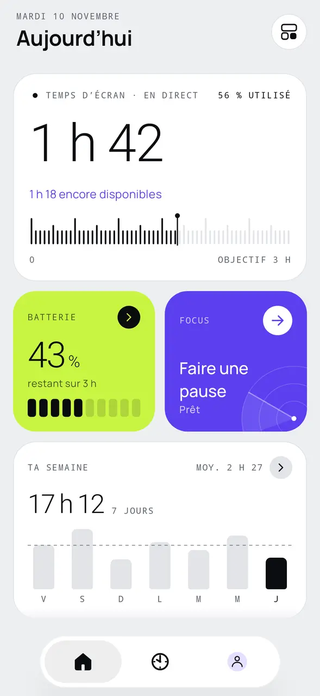
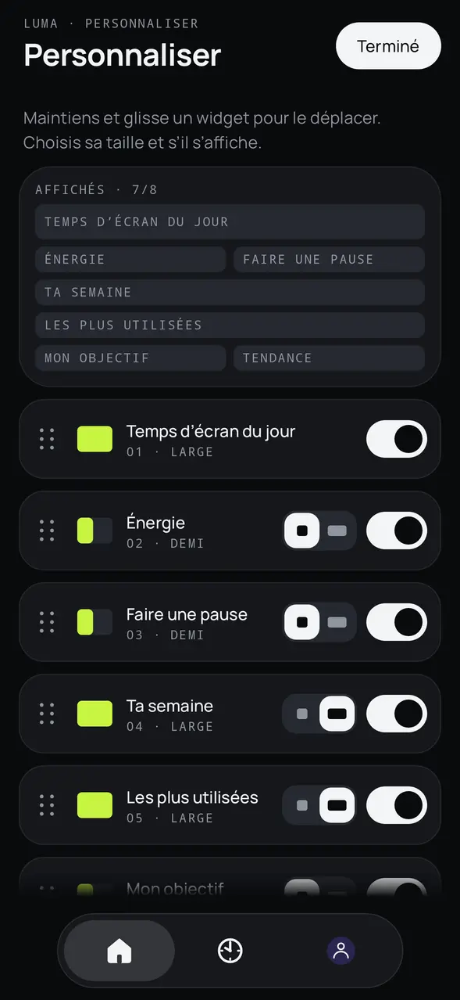
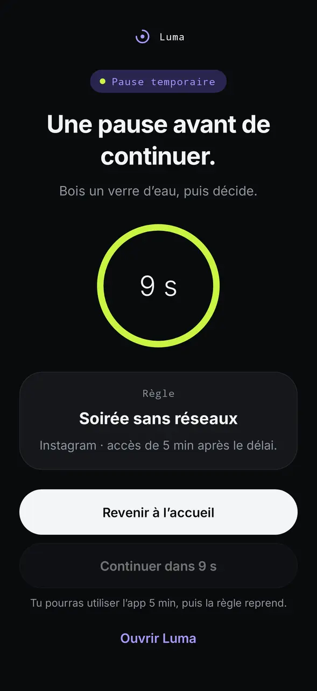
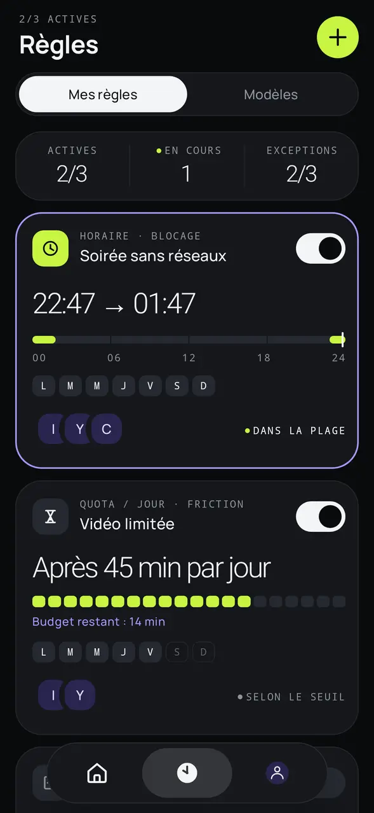
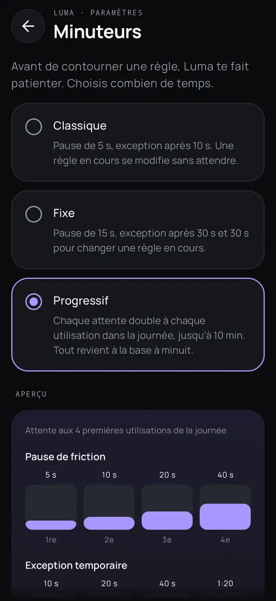
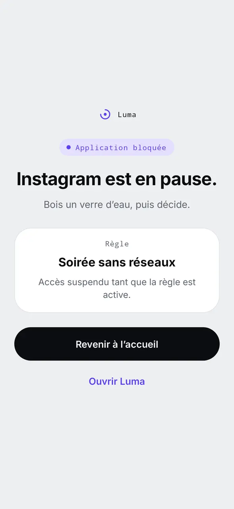
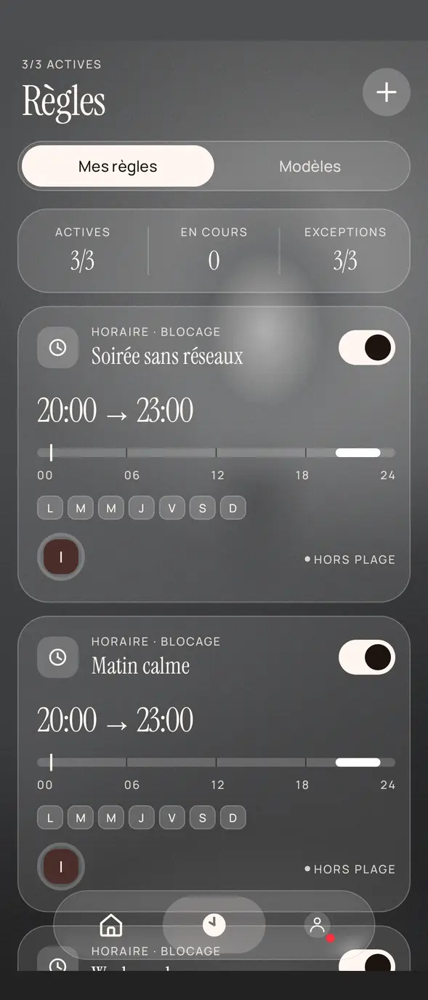

Temps d’écran · en direct
1 h 42
1 h 18 encore disponibles
Ton vrai temps d’écran
Calculé à partir des données d’Android, comparé à ta moyenne sur 7 jours à la même heure. Avec les apps les plus utilisées et le détail par jour.

Application Android · 100 % locale
Luma mesure ton usage réel et met des règles douces ou strictes sur les applications qui te prennent trop de temps. Un rappel, une pause de quelques secondes ou un vrai blocage : c’est toi qui choisis.
Sans compte · sans serveur · sans pub · sans traceur
01 · Accueil
La plupart des apps de bien-être numérique affichent des statistiques, puis s’arrêtent là. Luma te montre où tu en es, puis t’aide à agir au bon moment.
Temps d’écran · en direct
1 h 42
1 h 18 encore disponibles
Calculé à partir des données d’Android, comparé à ta moyenne sur 7 jours à la même heure. Avec les apps les plus utilisées et le détail par jour.

Batterie
43 %
restant sur 3 h
Ce qu’il te reste pour la journée, et une série de jours réussis symbolisée par une flamme.
Focus
Travail, Étude, Sommeil et Personnel. Un mode strict qu’on ne peut pas arrêter avant la fin, même en changeant l’heure du téléphone.
Personnaliser l’accueil
Batterie, Focus, semaine, applications, objectif, tendance, série : affiche ou masque chaque widget, passe-le en demi ou pleine largeur, déplace-le en le maintenant. Un aperçu de la grille suit chaque changement.

Widget
Temps restant, série et raccourci Focus, sans ouvrir l’app.
Rappels
Un message le matin et une alerte quand l’objectif du jour est dépassé. Facultatifs, bien sûr.
Reels Instagram
Une option à part revient en arrière quand un écran Reels s’ouvre, sans bloquer le reste d’Instagram.
02 · Règles
Crée une règle pour les apps qui posent problème, choisis quand elle s’applique et comment Luma intervient. Les apps essentielles (téléphone, messages, appareil photo, alarmes) ne sont jamais bloquées.
Déclencheurs
22:00 → 07:0045 min / jour5 h / semaine10 × / jourSoirée sans réseaux · s’applique
Tu vois d’un coup d’œil quand la règle s’applique, où tu en es dans ton quota, et les jours concernés.
Des modèles et des listes d’apps réutilisables accélèrent la création.
Un simple rappel, sans rien bloquer. Pour garder un œil sans se contraindre.
Une courte pause, puis un bouton « Continuer » qui ouvre l’app pour 5 minutes. Le temps de se demander si on en a vraiment envie.
L’application reste fermée tant que la règle s’applique. Trois exceptions temporaires par jour pour souffler.
Minuteurs
En mode progressif, chaque attente double à chaque utilisation dans la journée, jusqu’à 10 min, puis revient à la base à minuit.
| Mode | Friction | Exception | Règle en cours |
|---|---|---|---|
| Classique | 5 s | 10 s | sans attente |
| Fixe | 15 s | 30 s | 30 s |
| Progressif | 5 s → ×2 | 10 s → ×2 | 15 s → ×2 |


03 · Le bon moment
Quand tu ouvres une app limitée, Luma s’interpose avec une page calme : la règle en cause, une petite suggestion, et un anneau qui se vide pendant l’attente.
04 · Deux styles
Tech : un tableau de bord net, en clair ou en sombre, libellés monospace et vert « volt ». Aura : des fonds flous et granuleux, du verre dépoli, une lumière différente pour chaque partie de l’app.




Thèmes clair et sombre, interface en français et en anglais, texte agrandi pris en charge.
05 · Confidentialité
Luma n’a ni compte ni serveur. Les calculs se font sur l’appareil et aucune donnée ne le quitte. Ton temps d’écran, ça ne regarde que toi.
0
Tu installes, tu règles ton objectif, c’est tout.
0
Aucune donnée d’usage n’est envoyée nulle part.
0
Pas de publicité, pas de modèle caché.
0
Pas d’analytics, pas de SDK tiers. Ce site non plus.
Autorisations, en toute transparence
| Autorisation | À quoi elle sert | Obligatoire ? |
|---|---|---|
| Accès aux données d’utilisation | Temps d’écran, statistiques, limites de temps et d’ouvertures | Pour ces fonctions |
| Service d’accessibilité « Protection Luma » | Appliquer les règles et les sessions Focus. Il détecte seulement l’app au premier plan, jamais le contenu de l’écran. | Pour bloquer |
| Notifications | Rappels et règles réglées sur Notification | Non |
| Service « Luma · Reels Instagram » | Option Reels, désactivée par défaut, avec un consentement séparé | Non |
Luma n’active aucun accès toute seule, et chaque accès se retire à tout moment. Lire la politique de confidentialité →
06 · Questions
Luma est en version 1.3.1 et se prépare pour Google Play : signature, politique de confidentialité publique et déclarations d’accessibilité. Les essais de la protection sur plusieurs téléphones sont en cours.
Sur tous les téléphones Android à partir d’Android 7.0, jusqu’à Android 17. L’app pèse environ 2,4 Mo.
C’est le seul moyen, sur Android, de savoir quelle app passe au premier plan pour appliquer une règle au bon moment. Luma ne lit pas le contenu de l’écran : elle ne détecte que l’application ouverte.
Oui. Tu peux ajouter une exception temporaire sur une app bloquée, trois fois par jour au maximum, et modifier, désactiver ou supprimer une règle à tout moment. Les minuteurs règlent l’attente avant ces actions, pour que céder demande un petit effort.
Tu peux exporter et importer tes règles et tes profils Focus dans un fichier JSON, qui reste chez toi. Il n’y a pas de synchronisation en ligne, puisqu’il n’y a pas de serveur.
Luma ne contient ni publicité ni traceur. Les détails de distribution seront précisés à la sortie sur Google Play.
Bientôt sur Google Play
Luma arrive bientôt sur Google Play. Suis le projet pour être prévenu de la sortie.